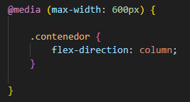
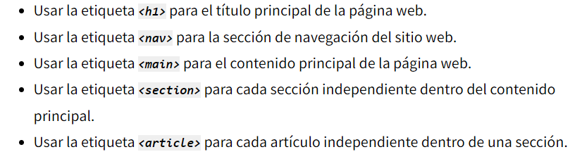
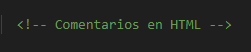

Diseño Responsivo
- `@media`: Regla para aplicar estilos según las características del dispositivo.
- `max-width`: Aplica estilos si el ancho de la pantalla es menor que el valor especificado.

Mobile First significa diseñar para dispositivos móviles antes de diseñar para
computadoras de escritorio o cualquier otro dispositivo (esto hará que la
página se muestre más rápido en dispositivos más pequeños).
Buenas Prácticas en HTML y CSS
Declara el DOCTYPE
Cerrar las etiquetas
Utiliza Etiquetas en Minúsculas
Cerrar las etiquetas
Utiliza Etiquetas en Minúsculas
Mantén una Indentación Consistente
Separar HTML de CSS
Evita el Uso Excesivo de Etiquetas div
Separar HTML de CSS
Evita el Uso Excesivo de Etiquetas div
Incluir siempre atributos ALT en las imagenes
Especifica la Codificación de Caracteres
Especifica la Codificación de Caracteres
Uso de etiquetas semánticas header, footer, article, section.
Mejoran la comprensión del contenido por parte de los motores de búsqueda
Mejoran la usabilidad
Mejoran la usabilidad

Las etiquetas semánticas estructurales en HTML5 son aquellas que se utilizan
para definir la estructura general y la organización del contenido de una página web
Accesibilidad
- Uso de atributos `alt` en imágenes.
Se puede hacer accesible una gran cantidad de contenido web solo asegurándose de que se utilizan
los elementos HTML con el propósito correcto todo el tiempo.
- Etiquetas `label` asociadas a campos de formulario.
**SEO Básico:**.
El diseño web influye en el SEO, en tanto que la configuración puede afectar el
posicionamiento del sitio. En ese sentido, utilizar HTML y CSS permite que
el sitio sea legible para los motores de búsqueda.
- Investigación de palabras clave
- Uso adecuado de etiquetas de encabezado (`h1` a `h6`)
- Uso adecuado de etiquetas de encabezado (`h1` a `h6`)
- Metaetiquetas (`meta`).
Mejora de la Visibilidad
Incremento del CTR
Prevención de Contenido Duplicado
Incremento del CTR
Prevención de Contenido Duplicado
Comentarios claros y concisos en el código.
